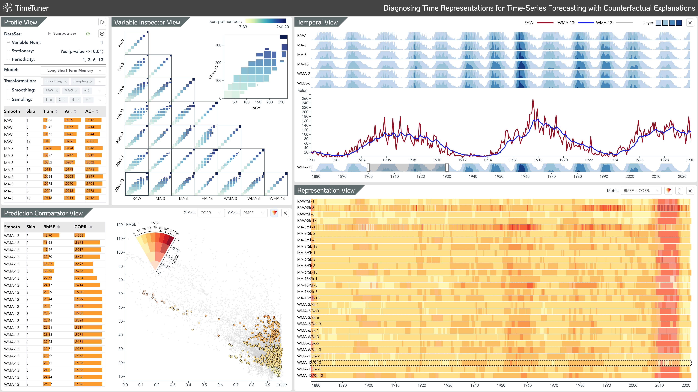

Abstract:
Deep learning (DL) approaches are being increasingly used for time-series forecasting, with many efforts devoted to designing complex DL models. Recent studies have shown that the DL success is often attributed to effective data representations, fostering the fields of feature engineering and representation learning. However, automated approaches for feature learning are typically limited with respect to incorporating prior knowledge, identifying interactions among variables, and choosing evaluation metrics to ensure that the models are reliable. To improve on these limitations, this paper contributes a novel visual analytics framework, namely TimeTuner, designed to help analysts understand how model behaviors are associated with localized correlations, stationarity, and granularity of time-series representations. The system mainly consists of the following two-stage technique: We first leverage counterfactual explanations to connect the relationships among time-series representations, multivariate features and model predictions. Next, we design multiple coordinated views including a partition-based correlation matrix and juxtaposed bivariate stripes, and provide a set of interactions that allow users to step into the transformation selection process, navigate through the feature space, and reason the model performance. We instantiate TimeTuner with two transformation methods of smoothing and sampling, and demonstrate its applicability on real-world time-series forecasting of univariate sunspots and multivariate air pollutants. Feedback from domain experts indicates that our system can help characterize time-series representations and guide the feature engineering processes.
Video